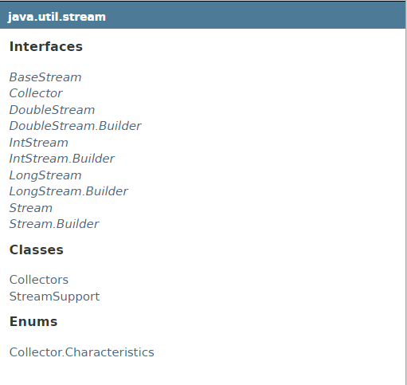
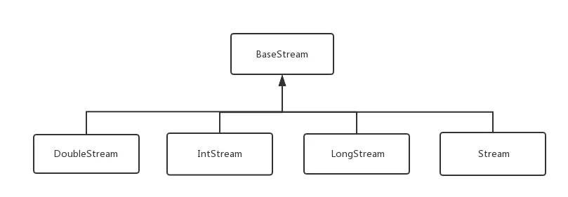

java8 stream流
- 1. Stream接口
- 1.1. forEach(Consumer<? super T> action)
- 1.2. forEachOrdered(Consumer<? super T> action)
- 1.3. peek(Consumer<? super T> action)
- 1.4. sorted()
- 1.5. map(Function<? super T, ? extends R> mapper)
- 1.6. flatMap(Function<? super T, ? extends Stream<? extends R>> mapper)
- 1.7. collect(Collector<? super T,A,R> collector)
- 1.8. reduce(BinaryOperator accumulator)
- 1.9. concat(Stream<? extends T> a, Stream<? extends T> b)
- 1.10. of(T t)
- 1.11. generate(Supplier s)
- 1.12. builder()
- 1.13. empty()
- 1.14. filter(Predicate<? super T> predicate )
- 1.15. min/max(Comparator<? super T> comparator)
- 1.16. count()
- 1.17. distinct()
- 1.18. allMatch()
- 1.19. anyMatch()
- 1.20. noneMatch
- 1.21. findAny() / findFirst()
- 1.22. skip(long n)
- 1.23. limit(long maxSize)
- 1.24. toArray()
java8新增了很多新的特性，值得去学习下。
新增加的Stream API (java.util.stream)引入了在Java里可以工作的函数式编程。这是目前为止对java库最大的一次功能添加，希望程序员通过编写有效、整洁和简明的代码，能够大大提高生产率。虽然效率没有简单for循环那么快，但是依旧值得我们去学习。
回顾编程的发展历史，我们不难发现一个规律，那就是先是从最初的C/C++演变到Java/.net，这是编程界的一大进步，因为我们不再关注于指针操作，比如在java中JVM虚拟机已经帮我们完成了相应的操作，由于这一进步，这付出的代价是执行效率会降低，但是带来的好处就在于加快了编程开发的速度。
当编程由Java/.net演变到JavaScript/PHP/Kotlin，这又是编程界的另一大进步，这意味着我们在编写程序时没有必要再关注于数据类型，而该数据类型是由相应的语言在运行时确定，这样，这又一次降低了程序的运行速度，但是相应的又提升了代码编写的效率，因而通过回顾历史我们不难得出如下结论：
在编写代码时，一定要以最简洁为原则，毕竟运行程序的硬件成本会随着时间的推移在不断降低，而程序员的薪资则不会。
参考自 for-forEach-stream三种遍历方法执行效率比较与选用思考

从上图中可以看见stream包中的接口比较多，类和枚举比较少。我们先来看接口：

DoubleStream，IntStream,LongStream，Stream都继承于BaseStream接口。并且它们都有各自的Builder接口：DoubleStream.Builder，IntStream.Builder，LongStream.Builder，Stream.Builder。剩下就只有Collector接口，Collectors，StreamSupport类，Collector,Characteristics枚举。
Stream接口
Stream接口是一个泛型接口，而DoubleStream,IntStream,LongStream只不过是对double,int,long的包装而已，所以我们弄懂Stream，其他的接口也都大同小异。
范例类：学生成绩类
1 | class Grade{ |
forEach(Consumer<? super T> action)
forEach接收一个Consumer接口，该接口只接收一个参数，没有返回值。
范例：
1 | Stream<String> stream = Stream.of("Hello", "World", "!!!"); |
System.out.println方法我们都很熟悉了，它接收一个参数，并且在控制台打印出来。这正好符合Consumer接口，所以这里输出的结果是 ：
1 | Hello |
forEachOrdered(Consumer<? super T> action)
forEachOrdered 表示严格按照顺序取数据 ，并且主要用于 parallelStream 流并行处理（并行处理可能会导致结果无序）
peek(Consumer<? super T> action)
peek方法也是接收一个Consumer功能型接口，它与forEach的区别就是它会返回Stream接口，也就是说forEach是一个Terminal操作，而peek是一个Intermediate操作，forEach完了以后Stream就消费完了，不能继续再使用，而peek还可以继续使用。
范例：
1 | Stream<String> stream = Stream.of("Hello", "World", "!!!"); |
输出结果:
1 | I |
因为peek是一个Intermediate操作，它并不会马上执行，当forEach的时候才会把peek和forEach一起执行，来提高效率，所以等于是每个stream元素执行两次打印操作，再执行下一个元素。
sorted()
将此流中的元素根据自然顺序排序，
sorted(Comparator<? super T> comparator)
sorted方法还有一个重载方法，可以传入一个Comparator，这样就可以根据Comparator来排序。
1 | Grade grade1 = new Grade("张三", "英语", 99); |
自然序逆序元素，使用Comparator 提供的reverseOrder() 方法
1 | list.stream().sorted(Comparator.reverseOrder()) |
map(Function<? super T, ? extends R> mapper)
map方法接收一个功能型接口，功能型接口接收一个参数，返回一个值。map用途是将旧数据转换后变为新数据，是一种1：1的映射，每个输入元素按照规则转换成另一个元素。该方法是Intermediate操作。
1 | Stream<String> stream = Stream.of("a","b","c","d"); |
flatMap(Function<? super T, ? extends Stream<? extends R>> mapper)
flatMap从结构上来看跟map差不多，主要是可以用来将stream层级扁平化。
1 | Stream<List<Integer>> inputStream = Stream.of( |
collect(Collector<? super T,A,R> collector)
collect方法跟reduce方法功能很类似，都是聚合方法。不同的是，reduce方法在操作每一个元素时总创建一个新，而collect方法只是修改现存的值，而不是创建一个新值。
1 | collect(Collector<? super T,A,R> collector) |
范例：
1 | // 根据科目，将学生的成绩分类 |
reduce(BinaryOperator accumulator)
reduce提供了三种重载方法
1 | Optional<T> reduce(BinaryOperator<T> accumulator) |
若是集合中元素类型是对象，那reduce操作可能会影响集合中对象的值。
concat(Stream<? extends T> a, Stream<? extends T> b)
该方法是Stream的静态方法，用于组合两个Stream生成新的Stream
1 | Stream.concat(Stream.of(1,2,3), Stream.of(5,6,7)).forEach(System.out::println); |
of(T t)
用于构造Stream
1 | static <T> Stream<T> of(T t) |
范例：
1 | Stream<Integer> stream = Stream.of(1,2,3); |
generate(Supplier s)
用于生成一个无限长度的Stream，接收只有一个参数，没有返回值的Supplier函数
这个无限长度 Stream是懒加载，一般这种无限长度的Stream都会配合Stream的limit()方法来用。
范例：
1 | // 获取10个随机数的Stream流 |
builder()
当使用builder()的时候,要声明希望存放的元素类型,此方法就会创建一个流对象
1 | Stream<String> stream = Stream.<String>builder().add("a").add("b").add("c").build(); |
empty()
empty()方法用来创建一个空的流
这个方法经常被用在创建一个不含元素的空的流进行返回,避免返回null
1 | public Stream<String> streamOf(List<String> list) { |
filter(Predicate<? super T> predicate )
filter方法接收一个断言型的接口，断言型接口接收一个参数，返回一个Boolean类型。filter 方法根据某个条件对stream元素进行过滤，通过过滤的元素将生成一个新的stream。
范例：
1 | // 过滤掉小于等于2的数字 |
结果：
1 | 3 |
min/max(Comparator<? super T> comparator)
Stream接口中的这两个方法接收一个Comparator参数，通过Comparator返回此流最小或者最大的元素。IntStream,DoubleStream.LongStream则不需要传入Comparator。
1 | // 获取成绩最高的学生对象 |
count()
返回此流元素的数量。
distinct()
消除重复元素后返回一个新Stream。
allMatch()
Stream中的所有元素满足传入的断言型接口，就返回true。
1 | Stream.of(1,2,3,4,5,6).allMatch( x -> x == 1); // false |
anyMatch()
Stream中的只要有一个元素满足传入的断言型接口，就返回true。
noneMatch
Stream中没有元素满足传入的断言型接口，就返回true。
findAny() / findFirst()
findAny() 在Stream流中查找到任何一个就返回 Optional
findFirst() 在Stream流中查找到任何一个就返回 Optional
findAny() 在串行情况下会返回第一个，和findFirst() 结果一致，而在并行的情况下就不能保证是第一个
1 | List list = Arrays.asList(1,2,3,4,5,6,7,8,9); |
skip(long n)
接收一个long类型的参数，表示跳过几个元素。
limit(long maxSize)
该方法接收一个long型参数，表示一共返回几个元素。
toArray()
1 | toArray() |
参考自 JAVA8你只需要知道这些（3）